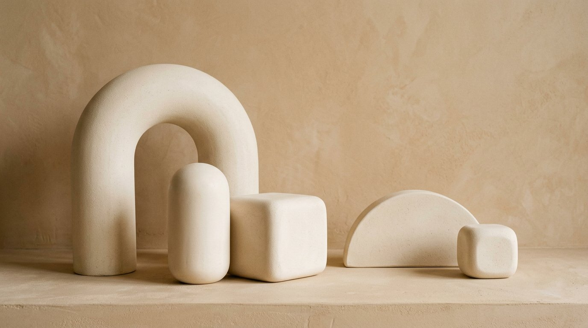

Закреплённые
Доступ
Выбрано 0
/lobby
Плейлист · 6
Закреплено
https://lanpaper.local/lobby
lobby-loop.mp4 и ещё 5 файлов
148.2 МБ
12 мин назад
/meeting-room
https://lanpaper.local/meeting-room?t=8f3c…
meeting-room.jpg · JPEG 2560×1440
3.1 МБ
2 дня назад

/workshop
https://lanpaper.local/workshop
workshop.jpg · JPEG 3840×2160
5.8 МБ
4 дня назад
/reception Нет файла
https://lanpaper.local/reception
Загрузите файл, ссылка уже работает
—
5 дней назад
Ничего не найдено
Попробуйте другой запрос или снимите фильтры.
Показано 7 из 7 ссылок
Всего медиа: 2.1 ГБ · кэш превью: 42 МБ